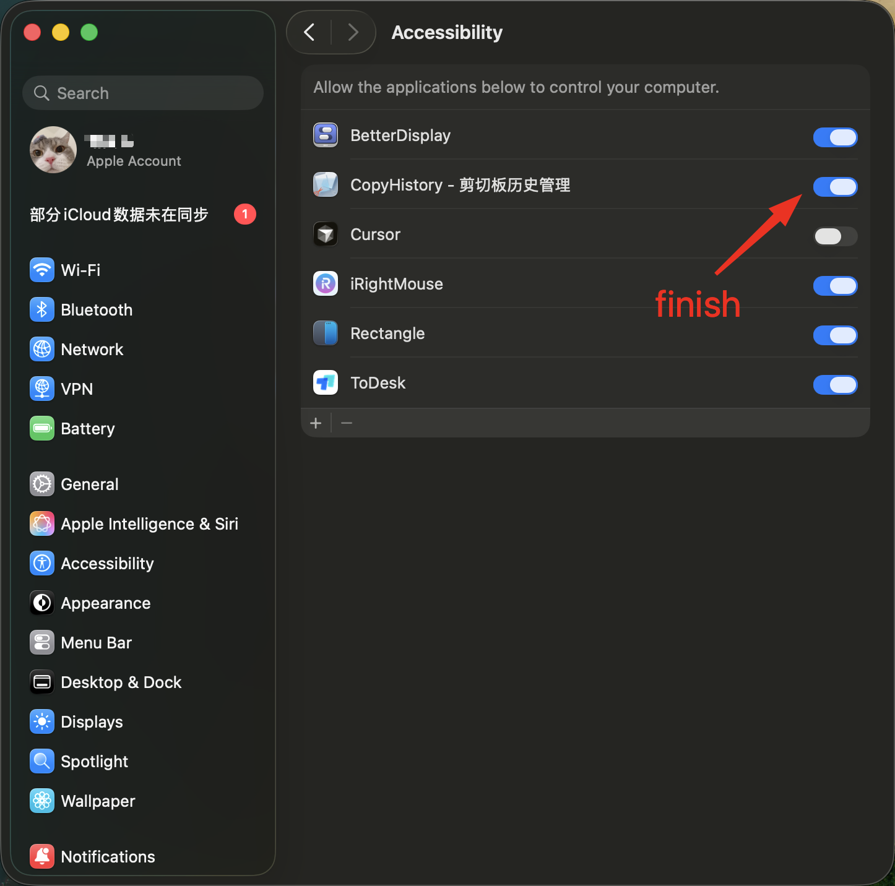

How to Enable Accessibility Permission
CopyHistory needs Accessibility permission to paste content directly into other apps. macOS requires you to manually grant this permission for security reasons.
Without this permission, CopyHistory cannot simulate the
Cmd+V keystroke to paste items. You would have to manually paste items yourself.
The app should have opened the Privacy & Security settings page for you. If not, please open System Settings manually.
Navigate to: Privacy & Security > Accessibility.
If the settings are locked, you might need to enter your password or use Touch ID to make changes.
There are two ways to add CopyHistory:
Method A: Drag and Drop (Recommended)
Drag the CopyHistory icon from the guide window directly into the Accessibility list in System Settings, as shown below:

Method B: Manual Addition
- Click the + button at the bottom of the list.
- Navigate to your Applications folder.
- Select CopyHistory and click Open.
Make sure the toggle switch next to CopyHistory is turned ON (blue). Once done, it should look like this:
If CopyHistory is already in the list but not working:
- Select it and click the - button to remove it.
- Add it again using the steps above.
Once enabled, CopyHistory will automatically detect the permission and the guide window will close.